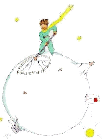

第9章
我想他是趁一群野鸟迁徙的机会出走的。动身的那天早晨，他把星球收拾得井井有条。他仔细地疏通了活火山。星球上有两座活火山，热早餐很方便。还有一座死火山。不过，正像他所说的：“谁说得准呢！”所以这座死火山也照样要疏通。火山疏通过了，就会缓缓地、均匀地燃烧，不会喷发。火山喷发跟烟囱冒火是一样的。当然，在地球上，我们实在太小了，没法去疏通火山。它们造成那么多麻烦，就是由于这个缘故。
小王子还拔掉了刚长出来的几株猴面包树幼苗。他心情有点忧郁，心想这一走就再也回不来了。所有这些习惯的活儿，这天早上都显得格外亲切。而当他最后一次给花儿浇水，准备给它盖上罩子的时候，他只觉得想哭。
“再见啦，”他对花儿说。
可是她没有回答。
“再见啦，”他又说了一遍。
花儿咳嗽起来。但不是由于感冒。
“我以前太傻了，”她终于开口了，“请你原谅我。但愿你能幸福。”
他感到吃惊的是，居然没有一声责备。他举着罩子，茫然不知所措地站在那儿。他不懂这般恬淡的柔情。
“是的，我爱你，”花儿对他说，“但由于我的过错，你一点儿也没领会。这没什么要紧。不过你也和我一样傻。但愿你能幸福……把这罩子放在一边吧，我用不着它了。”
“可是风……”
“我并不是那么容易感冒的……夜晚的新鲜空气对我有好处。我是一朵花儿。”
“可是那些虫子和野兽……”
“我既然想认识蝴蝶，就应该受得了两三条毛虫。我觉得这样挺好。要不然有谁来看我呢？你，你到时候已经走得远远的了。至于野兽，我根本不怕。我也有爪子。”
说着，她天真地让他看那四根刺。随后她又说：
“别磨磨蹭蹭的，让人心烦。你已经决定要走了。那就走吧。”
因为她不愿意让他看见自己流泪。她是一朵如此骄傲的花儿……